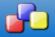

Third-party Tools and Libraries
These are some links to Harbour related 3rd party products:
GUI - Free and Open Source
MiniGUI
Harbour
MiniGUI (HMG) is a xBase Windows / GUI Development System based on Harbour MiniGUI library, Harbour
MiniGUI IDE, Harbour compiler and MingW compiler. This implements a semi-oop model and is a ready to use Harbour distribution who
include all needed components for you work.
More info can be found:
here
MiniGUI unofficial build with
EXTENDED features:
here
ooHG
Object-Oriented Harbour Graphical interface. This is an object-oriented style conversion from the MiniGUI's library. Supporting
existing code, and adding new and powerful advantages of the object oriented programming.
It offers a great flexibility for the well-know MiniGUI functionality, and a very easy way to add new features with the lesser
affectation to working code (anyone can subclass any control and add it's own features to it).
HwGUI
Is a cross-platform GUI library for Harbour, it is written on C and Harbour.
HwGUI includes two versions - Windows and Linux. Windows version is based on direct calls of win32 API - this allows to keep it quite
fast and compact. Linux version is based on GTK, it supports the same set of classes, commands and functions as the Windows
version, though not all yet. Thus, using some base subset of HwGUI, you can create crossplatform GUI applications.
Currently Windows version of HwGUI supports 5 C compilers: Mingw, MS Visual C, Borland C, Pelles C and Open Watcom C.
wxHarbour

wxHarbour is a set of Harbour language bindings for wxWidgets. Providing a portable multi-platform GUI toolkit for Harbour.
Note: wxWidgets lets developers create applications for Windows, macOS, GTK+, X11, Motif, WinCE, and more
using one codebase. It can be used from languages such as C++, Python, Perl, Harbour and C#/.NET. Unlike other cross-platform
toolkits, wxWidgets applications look and feel native. This is because wxWidgets uses the platform's own native controls
rather than emulating them. It's also extensive, free, open-source, and mature.
HbWxW
HbWxW is a multiplatform GUI library for Harbour. It is built on top of wxWidgets platform GUI library, available on Unix like
systems, Windows, macOS and WinCE operating systems. wxWidgets is "An open source C++ GUI framework to make cross-platform
programming child's play".
The main goal of HbWxW is to provide an easy to use GUI library, which can be utilized on all platforms Harbour currently
supports. That's why it is based on a library which gives you a single, easy-to-use API for writing GUI applications on multiple
platforms.
HbWxW, like its underlying GUI library, is powerfull and efficient enough to realize the most common tasks, as expected by the
average and advanced programmers. Its main advantage over other GUI libraries is the 'native look & feel' on all supported
platforms, simplyfying application usage and giving users the same sense of comfort they are already used to.
xbGTK
xbGTK is an open source library for Linux and Windows. It allows to use GTK+ in programs written in xBase-like languages. The
library is written by Phil Krylov. It is based on the PyGTK - Project by James Henstridge. Some files are modified, though, to
generate proper xBase code (instead of Python).
xHGtk
xHGtk is an multiplataform GUI library for Harbour. Use GTK+ to create programs that can run in Windows and Linux. It provides a
library of commands, functions and classes for multiplatform development using Harbour, MinGW graphics library and GTK + 2.10 or
higher.
T-Gtk
GUI for Harbour toolkit for GTK+. This library allows to give the compilers of Harbour from the full power of GTK +
Cross-platform.
GUI - Commercial
Fivewin for Harbour (FWH)
FiveWin is original a library for Clipper 5 which you use in exactly the same way that you have been using
other third party libraries in Clipper. The main difference is that FiveWin lets you build executables that run on
Windows as REAL Windows Programs.
You have all the power of Windows and it's environment at your fingertips! Only downside of the FiveWin for Clipper... it's still
16-bit. Now FiveTech Software has managed to make the library work with Harbour.
Visual Report designer for Harbour/FiveWin

EasyReport provides every Harbour/Fivewin user a very simple and fast way to add a visual report designer
to his/her applications. EasyReport is very flexible, cost-effective, multilingual and you can give the visual designer to all of
your end users without paying anything extra (royalty free).
EasyReport supports up to 100 areas with 1000 items each. The possible item types are Text, Image
(supports 8 different image file formats), Graphic (Lines, Rectangles, Ellipse etc.) and Barcodes.
Xailer
Xailer is a complete 32-bit visual development environment for xBase users, following the guide lines of other already
existing programming environments (Delphi, Visual Basic,...). As any other complete visual environment includes:
- Form designer
- Professional Source code editor
- Property inspector
- Project manager
- Report generator
- Resource manager
- Integrated Debugger
And all these features are built over a unique interface, which is tremendously intuitive and permits the development of
any project in record time.
RDD
OTC Mediator RDD for Harbour
OTC Mediator is RDD driver for Oracle, Microsoft SQL Server and Sybase Adaptive Server Anywhere Mediator
was designed to allow quick migration of DBF data and xBase applications to one of the mentioned databases. It implements all RDD
features required for easy migration including RECNO record numbers, DELETED flag, Clipper-compatible record and file locks as
well as complex expression indexes.
Basically, Mediator package consists of three parts:
- Set of utilities facilitating data (DBF) and index (NTX, CDX) migration to RDBMS
- Libraries implementing RDD interface to be linked into Harbour or Clipper application
- Mediator server translating application requests into SQL commands sent to database
Sybase Advantage Server for Harbour
Harbour has native support for Sybase Advantage Database Server, a high-performance client/server RDBMS for stand-alone,
networked, internet and mobile database applications. Advantage Database Server allows developers the high-performance and
control of navigational commands combined with optimized data access methodology for easily delivering unparalleled performance,
Advantage provides security, stability and data integrity while being completely maintenance-free.
With no mandatory configuration requirements, Advantage is easily installed on an existing network infrastructure. Because of the
embedded qualities of Advantage, it works tirelessly behind the application, delivering client/server performance, stability, and
data integrity that today's business applications demand.
In addition to Harbour, Advantage applications can be developed using a wide variety of languages including Borland Delphi, Borland
Kylix, Microsoft Visual Basic, Microsoft Visual C++, Borland C++ Builder, CA-Visual Objects, Perl, PHP and many other languages
including those that can use ODBC, ADO, ADO.NET and OLE DB.